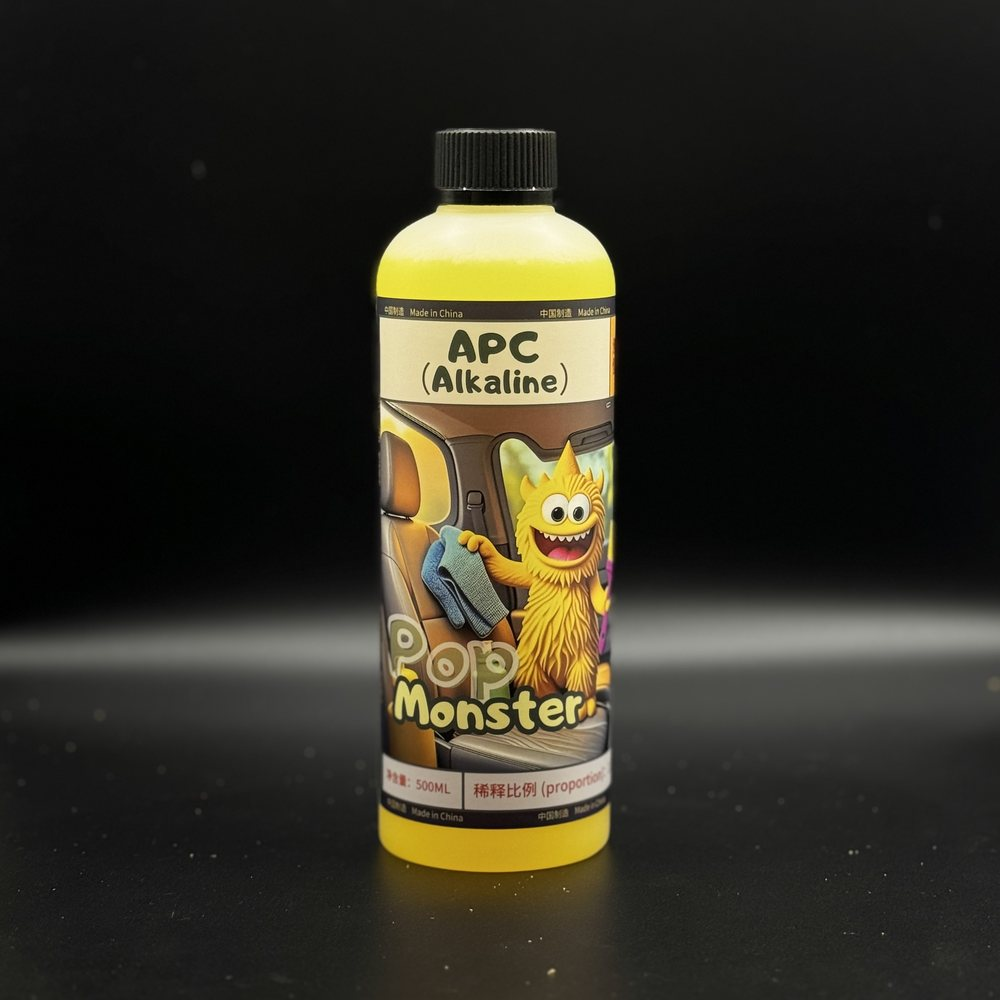

Interior Cleaner
Concentrated interior cleaner. Dilute it, spray it on dirt on the seats, door panels, and dashboard, then wipe it off. Handprints, drink stains, pet messes: this handles them.
Add to cart → fill in your details → send your order on WhatsApp; we confirm on WhatsApp whether each item can ship to your country and what shipping costs, then you pay
Product description
Dirty interior, handprints your kids left on the seats, drink stains from breakfast in the car, messes from hauling pets—daily interior dirt mostly shows up on the seats, door panels, and dashboard. This is a concentrated interior cleaner: dilute it, put it in a spray bottle, spray it on the dirty spots, then wipe with a clean towel. There are multiple dilution ratios on file internally, so go by what's on the bottle label, or message us on WhatsApp to confirm. For leather and light-colored seats, test on a small hidden area first.
Specs
- Dilution ratio
- Go by what's on the bottle label, or message us on WhatsApp to confirm before diluting
- Pads to pair with
- A spray bottle or foam bottle, and a clean microfiber towel
Things to know
- Our internal records have multiple conflicting dilution ratios. Always go by what's on the bottle label, or message us on WhatsApp to confirm before diluting. Don't mix it from memory.
- The pH of this product hasn't been finalized for public release yet. Leather, light-colored seats, suede, and nubuck are high-risk materials. Always test a small hidden area on these surfaces first, and confirm there's no discoloration, stiffening, or water marks before treating the whole surface.
- We also recommend testing first on interior metal trim and chrome parts, and not letting the cleaner sit on the surface too long.
- Keep the doors open for ventilation while you work, and wear protective gloves to avoid prolonged skin contact.
- If it gets in your eyes, flush right away with plenty of water, and see a doctor promptly if it doesn't feel right.
- This product is for external cleaning use only. Never ingest it, and keep it out of reach of children and pets.
- Do not mix with other cleaning products.
- Avoid using it in direct sun or a hot, stuffy car interior. The cleaner will dry too fast and leave marks.
FAQ
Yes, but dilute it to 1:20 or even weaker. Leather is more sensitive, so after cleaning we recommend following up with the Leather Care product (A013) to condition and protect it, so the leather doesn't dry out and crack.
Yes. This product's APC formula works well on fabric stains, especially grease and drink stains. Don't over-dilute it: use a 1:5 to 1:10 ratio, spray it on, brush lightly, then blot dry.
No. This product has a no-residue formula, so it won't leave a greasy feel or whitening after cleaning. For a matte finish, dilute it to 1:20; for a slight sheen, use a slightly stronger mix and apply a thin coat.
Similar products

Interior Cleaner
If you're ready to buy, add it to your cart and send your order on WhatsApp. If you're not sure it's right for your car, ask us on WhatsApp first before you order.